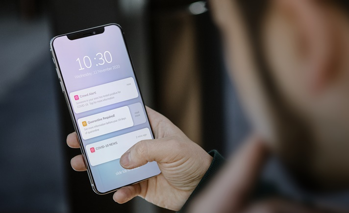
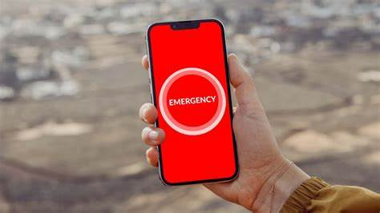

O aplicativo mantém um histórico completo de todas as consultas realizadas, ajudando os pais a revisarem o tratamento e se prepararem para futuras consultas.

Caso ocorra alguma situação de emergência ou alteração significativa no quadro de saúde da criança, o app envia alertas imediatos aos pais, garantindo que eles estejam sempre atualizados
O aplicativo oferece a possibilidade de consultar especialistas de diferentes áreas da saúde infantil, proporcionando um atendimento mais completo e personalizado.